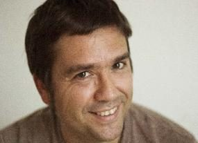

Fernando Domínguez Rubio

“Fernando Domínguez Rubio (Doctor, Cambridge, 2008) es actualmente Investigador Post-Doctoral Marie Curie Post-Doctoral Fellow en la New York University (NYU) y el Centre for Research on Socio-Cultural Change (CRESC) y profesor en el Departamento de Comunicación en la Universidad de California, San Diego. Su investigación se centra en el estudio de las condiciones infraestructurales y ecológicas que permiten la reproducción de distintas formas de subjetividad y objetividad. Es también uno de los editores del blog Material World Blog” (Fernando Domínguez Rubio, s. f.)
Uriel Fogué
Uriel Fogué es un doctor en arquitectura por la Universidad politécnica de Madrid y actualmente profesor en la Escuela politécnica federal de Lausanne, la Escuela Técnica Superior de Arquitectura de Madrid y la Universidad Europea de Madrid. Cuenta con dos obras seleccionadas en los European Union Prize For Contemporary Architecture Mies Van Der Rohe Award El texto que analizamos nosotras, publicado en el International Journal of Urban and Regional Research, junto a Fernando Domínguez Rubio, fue destacado como uno de los textos más relevantes recogido en los últimos 40 años de esta publicación científica.